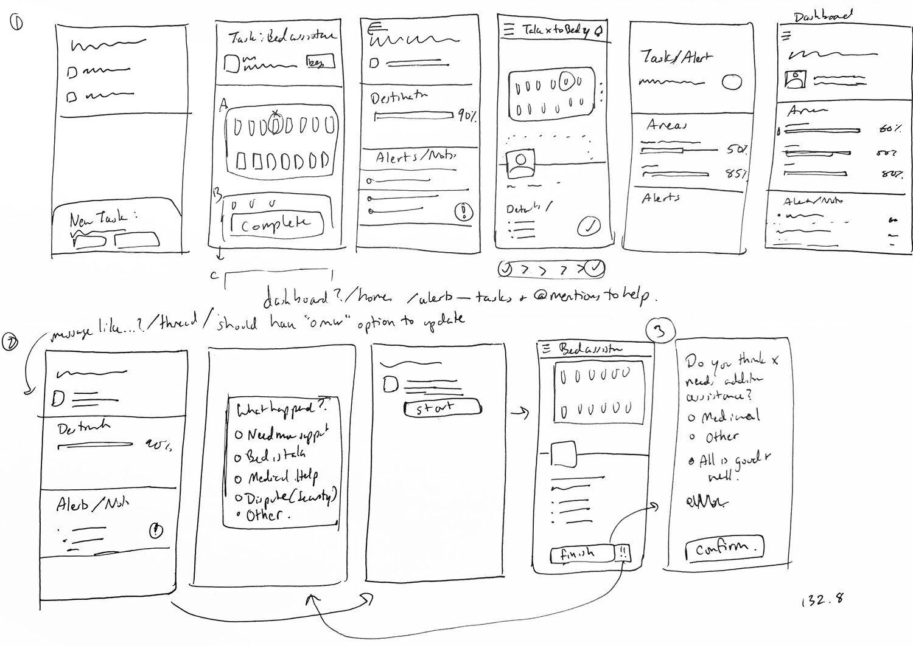
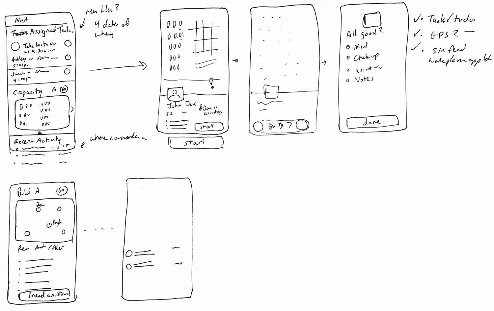
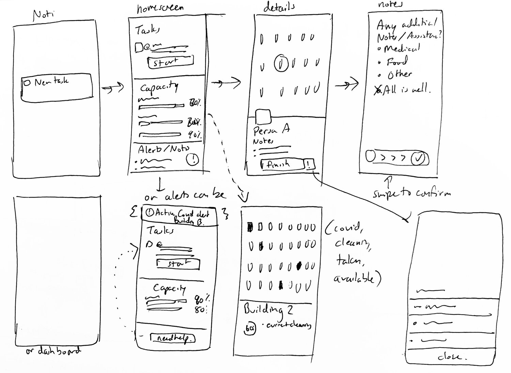

Responsibilities
Project Context
The Problem in my hometown of Madurai IN
On any given day over 1,700 people in Madurai are experiencing homelessness. Given the increasing barriers to secure housing, this leads many to shelters such as HomesFirst where shelter volunteers are on the frontlines to assist their residents.
However, front-line workers are overwhelmed to efficiently monitor and keep up with the tasks due to their shelters and residents.
A Solution for task management.
A task administrative app where front-line workers can efficiently keep track of their tasks, be aware of their co-workers’ location, bed availability, and update the administration whenever they need additional assistance.
.png)
1. Task Management: Keep on top of all your tasks and request additional assistance on the spot.
.png)
2. Request Help Wherever you are. No more fussing over contacts. Help when you need wherever you are.
.png)
3. Real-Time Status Updates at a Glance. Stay aware of all shelters, fellow front line workers, and recent activity to keep yourself in the loop.
DAY 1: UNDERSTANDING THE PROBLEM
Volunteer to Develop Empathy.
Due to time constraints, I was not able to volunteer as my preferred way of research. However, to be resourceful I looked up other shelters to develop empathy and understand the daily grind of front-line workers.
.png)
Front Line Workers felt disorganized in their workplace as everything was done on paper.
Based on the interview responses I have received from Hania, the HomesFirst manager, I found that more than the actual inventory of their resources, it was a matter of knowing who was where and what was available in real-time that was the biggest barrier to effective workflows. These are some of the questions I asked:
1. What does the day-to-day look like for a front-line worker?
2. What is the process for finding someone a bed like?
3. How has the COVID impacted the current situation with HomesFirst?
DAY 2: COMING UP WITH IDEAS AND SOLUTIONS
To design for tasks is to design for SPEED.
Feelings of confusion came from a clutter of communication. Thus, to design for tasks was to more design for speed- or seamless communication. Then Based on the journey map below, I made my best assumptions to try identifying these other pain points that provided opportunities for my design.
DAY 3 + 4: DECIDING + PROTOYPING
Sketching for Efficient Flows + Visualizations
Then utilizing the different opportunities, I started to look at different UI to design the best visualization of the capacity of available beds as well as tasks. Ticketmaster, Wealthfront, Uber, and task management apps were sources of inspiration!

Sketches of Possible sections of the app

Exploration of the completing a task flow
